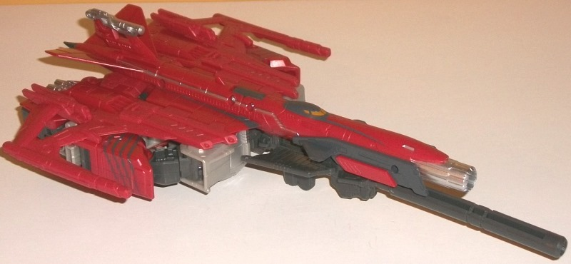
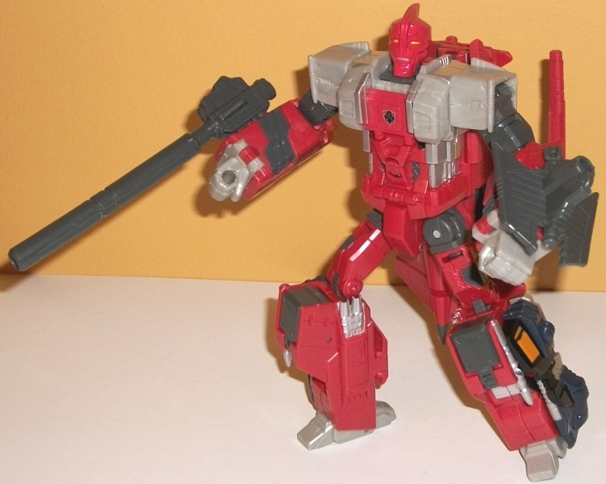
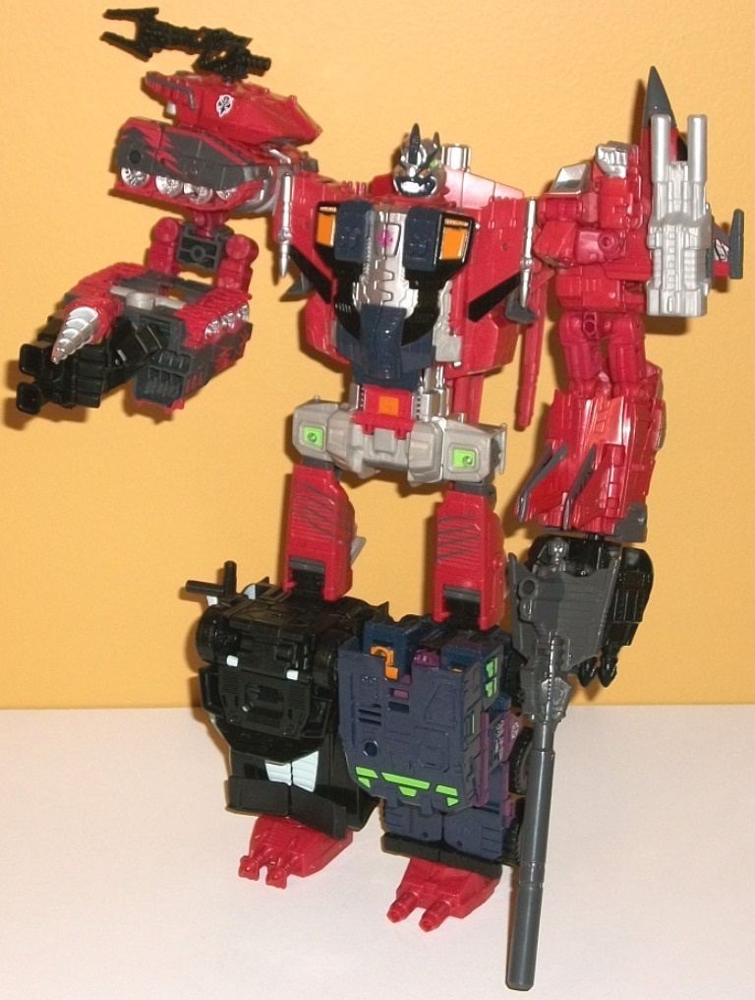

General
Sea Clamp (w/ review of Predacus) [BotCon 2016 Exclusive]
General
Sea Clamp (w/ review of Predacus) [BotCon 2016 Exclusive]
General
Sea Clamp


Allegiance
: Predacon
Size
: Voyager (comes in a 5-pack
with
General Cicadacon
,
General
Ramhorn
,
Predacon Tarantulas
, and
Ravage
)
Difficulty of Transformation to Robot
:
Easy
Difficulty of Transformation to Torso
:
Medium
Color Scheme
: Dull gray, moderately
pale red, and some light milky gray, silver, black, light orange, very
dark purple, and light lime green
Individual Rating
: 8.4
(NOTE: Because this is a repaint, this is
not a full-blown review. This mainly covers any changes made to the mold
and the color scheme, and merely compares it to Combiner Wars Silverbolt.
For a review on the mold itself, read the review of Combiner Wars Silverbolt
here
.)
Most of the homages in
this boxset are stretches considering the source material, but Sea Clamp
is definitely the biggest stretch-- compare the above pics of the toy with
Sea
Clamp's original toy
. The only callbacks to Sea Clamp's original design
are four leg-like gray "dashes" on the lower arms that look a bit like
lobster legs in vehicle mode, along with a gray paint app around the cockpit
and along the nosecone that look a little like the head and antennae shape
of a lobster. Pretty much everything else is more of a loose homage to
the Tripredacus Council member seen in "The Agenda, Part I" in the
Beast
Wars
show, with similar colors and head shape. It's a bit odd that
Sea Clamp of all of them is the biggest toy, though, given that in the
show he seemed like the smallest. (Then again, I guess that's another small
nod to the original Tripredacus toy.) Like the other "original Tripredacus"
members in this set, Sea Clamp's color scheme is mostly a fairly pale red
that's honestly a rather boring shade. His other main color is a dull shade
of gray, which contrasts with the red decently I suppose, but itself isn't
an exciting color either. This doesn't make for an attractive color scheme,
particularly in vehicle mode-- I really wish they had gone for Sea Clamp's
original toy colors, here. Fortunately there are a fair number of paint
apps that aren't just those two colors. There's a pretty good amount of
silver-- on lines on the side of the nosecone, on the tailfin, on the weapon
port on the nosecone front, and some silver paint on the lower robot legs
and parts of the robot chest. The plastic counterpoint to this silver--
visible pretty much solely in robot mode-- is a light milky gray, which
unfortunately is that really boring shade of the color. I wish FunPub had
made the shade a bit more metallic or something to get it to stand out
more. There's also some black and very dark purple along the sides of the
legs-- mostly for the Predacus torso mode, which really help those pieces
pop, at least. As minor accent colors, there's some orange used on Sea
Clamp's lower legs, cockpit windows, and robot eyes, and some light green
on the backside of his shoulders (again, mostly for torso mode).
Sea Clamp has a new
headsculpt for his robot mode, which is fairly spot-on to the show model,
though the eyes aren't quite as sunken-in. It's definitely an ugly head,
but intentionally ugly-- the crest in the middle of the head and face is
odd, but certainly unique, and he's got a mild scowl on his face. It's
also fairly proportional, though given the mold's construction, he doesn't
have the hunchback he did on the show. Other than the headsculpt, Sea Clamp
has the same changes made to the mold as
Scattershot
,
but no other changes specifically made for this incarnation.
Predacus
(Combination of Cicadacon, Ramhorn, Ravage, Tarantulas, and Sea Clamp)

Allegiance
: Predacon
Individual Rating
: 8.6
The combined form for
the five toys in the boxset-- named "Predacus" this time around and not
"Tripredacus", since there's 5 members instead of 3-- is certainly a more
solid-looking combiner, mold-wise, than the original Tripredacus, in the
arms in particular. There's a wonderful headsculpt just for the gestalt
mode, which is pretty much as close as FunPub could get to the original
Tripredacus headsculpt given the size dimensions of the chamber that the
head has to fit into for the other modes. It even has the purple antennae
piece that is a separate, movable piece! I love the utterly monstrous look
of the head, but there are a few definite differences between it and the
original Tripredacus' head-- the antennae is significantly shorter, the
head is painted silver instead of white, and the lower portion of the head
is a bit wider than the top, which wasn't the case in the original. I do
love how well they replicated the eyes, the purple lines on the toy, and
even some light green bits. That said, my complaint with Predacus as a
whole is similar to my complaint with most of the rest of the set, and
that's that the molds just don't fit him that well. Forget the whole "5-bot
instead of 3-bot combiner" thing, the colors are completely different,
with the top being mostly a rather bland red and gray (though the dark
purple, orange, and black paint apps on the chest look pretty good and
help to break up the chest some, and shares at least a few minor details
with Tripredacus' chest). Ravage and Tarantulas are both black-ish, which
works color-wise as the legs and helps to "separate" them from the "main"
three components. I do like that color separation, but the colors just
aren't remotely similar to Tripredacus, and I really REALLY wish FunPub
had colored the Tripredacus members like their original toys. (Of note
is that, of course, given that these are Combiner Wars toys, you can swap
appendages, but above is the "recommended" configuration, which works better
as if you make Ravage and/or Tarantulas arms, it sort makes the color scheme
less cohesive.)
General Sea Clamp Bio:
MOTTO: "Life is much, much more!"
Sea Clamp was the end result of Cicadacon's
early experiments. Following Cicadacon's rediscovery of his own first generation
origins he set to work studying his "fellow" Decepticons and found other
dormant Cybertronians ready to be awoken. About the only traits Sea Clamp
retained from those days are a sense of fierce loyalty (except now to the
Cybertronian cause) and a distinct lack of expression. Only Ramhorn is
able to get a reaction from him and it is usually violent.
He maintains a fondness for the past
and many of his former Decepticon comrades and has encouraged many, including
Ravage, to follow the will of the Council rather than the Decepticon cause.
Sea Clamp thrives working in secret, on clandestine missions and with hidden
agendas, which is why his place operating within a secret council under
the noses of the Decepticons and living a dual existence suits him perfectly.
Strength: 8.0
Intelligence: 8.0
Speed: 5.0
Endurance: 9.0
Rank: 10.0
Courage: 8.0
Fireblast: 7.0
Skill: 6.0
I have the same general
comments for both Sea Clamp and Predacus-- the molds themselves are great,
and the new headsculpts are pretty good, too. However the molds themselves
bear VERY little resemblance to their originals, and when you add in color
schemes that also have no resemblance to the original-- even if I get the
train of thought behind "show colors" for the Tripredacus members-- it
makes the toy look basically nothing like the original except the headsculpts.
It just doesn't work, especially for expensive BotCon pieces. You can really
tell this idea was "shoehorned" in when Hasbro mandated FunPub change their
set to mostly Combiner Wars molds, because so few of those molds work for
Beast Wars characters. As such, this is one of my least favorite BotCon
sets-- all the more a shame since, as of this writing (10/18), this has
been the last BotCon.
Reviews by Beastbot
Back to BotCon/OTFCC
Exclusives Index